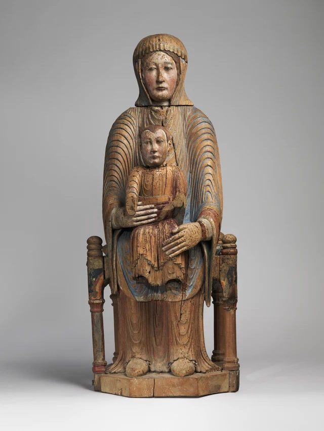
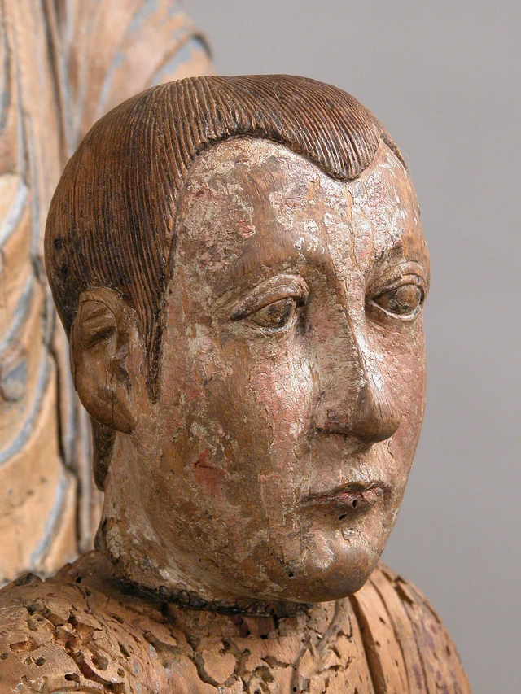
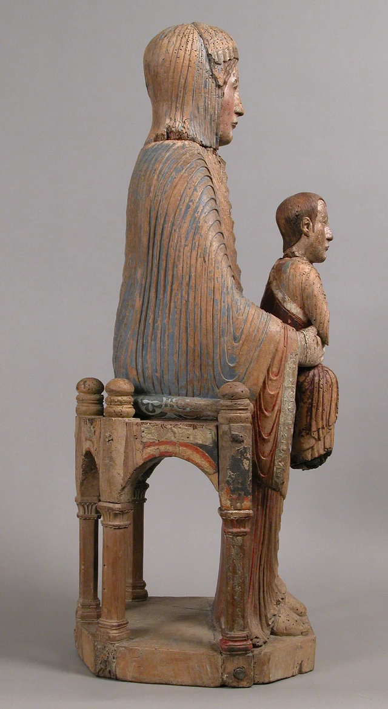
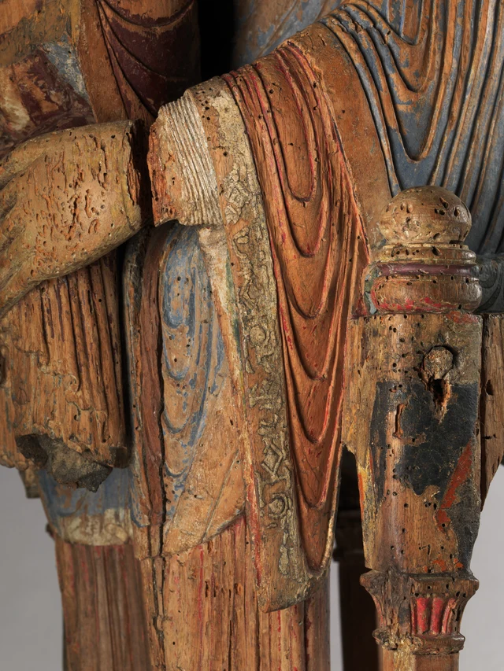
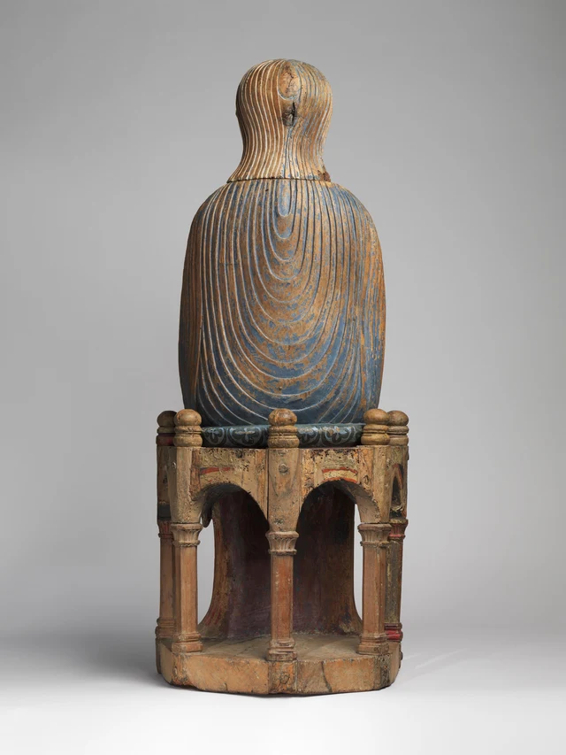
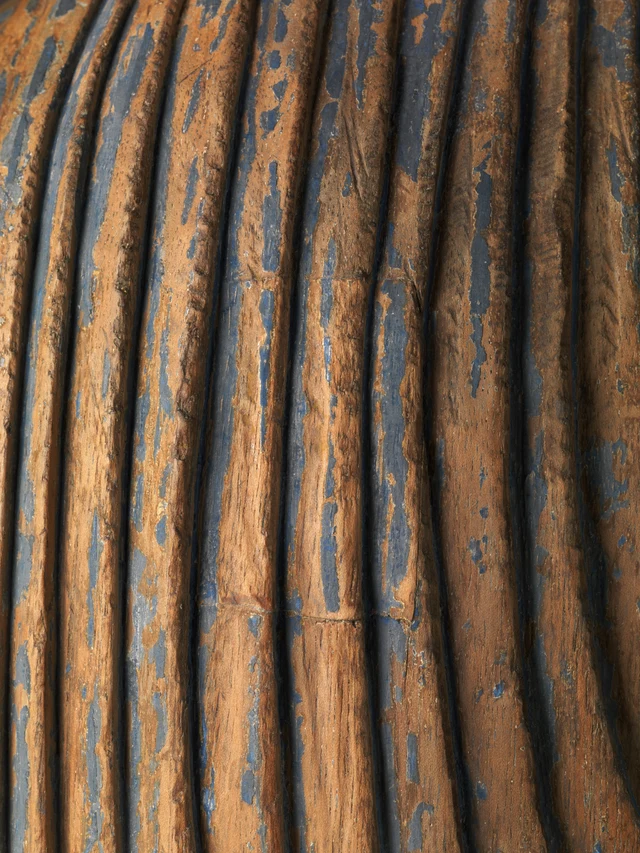

孩子坐在母親身前，兩張臉都朝著我們。
母親的頭高出許多，肩膀從孩子兩側展開，長衣一直垂到腳邊。孩子的身體小了一圈，卻也挺直著：頭沒有靠向母親，臉沒有轉過去尋找她。母親一隻手橫在他腰前，另一隻手斜搭在他的膝部。兩隻很大的手把他留在身體中央，同時把他的頭、胸和上身讓出來。
先停在這個關係上。她抱著他，而這個擁抱有一個面向外面的開口。我們正站在開口前。

這件雕塑給出的威儀，建立在一種很具體的相依之上：孩子正面面對觀看者的地位，由母親的膝、手與軀幹托出來。身體的大小、抱持的位置和向前的朝向，共同把一個坐在母親腿上的孩子，變成接受人們瞻望的中心。
作品屬於十二世紀法國的羅馬式雕塑。這樣的聖母子像稱為「智慧之座」（Sedes Sapientiae）：在基督教解釋中，基督是降生為人的神聖智慧，聖母承載著他。知道這個名稱，再看母親的身體，「座」便不只是抽象的比喻。她確實坐在寶座上，也以自己的身體形成孩子的座位。館方釋讀
一 小身體，佔據大形體的中心
正面的輪廓很穩。從頭巾下緣到兩肩，形體向兩側展開，再沿手臂落下來；兩邊座柱立在外側，把較低處的寬度固定住。聖母的腳並列落在底部，長衣遮住兩腿之間的大部分間隔。這個外輪廓裡，很少有向旁邊伸出的突兀部分。
孩子就在這片連續形體的前面。
他沒有佔滿母親的胸腹。頭頂上方仍露出她頸下的層層衣褶，兩側仍露出她的衣袖，袍子下方也還有她的衣服。我們可以沿著孩子的邊緣走一圈，始終認出背後較大的身體。母親因此既是一個人物，也是讓另一個人物清楚顯現的背景。
這種大與小，並沒有把重要程度簡單地排成大者在先、小者在後。孩子的位置更靠前，臉處在母親胸前那片密集褶紋之間，兩隻大手又集中到他的身上。大的形體把注意力送向小的形體。聖母的手越顯得寬長，我們越能察覺，它們圍住的這個人值得被仔細看。
兩隻手的方向也不同。畫面左邊的手指幾乎橫著伸過去，像一道清楚的橫線，經過孩子腰前；畫面右邊的手沿膝部斜下來，手指順著衣服展開。它們沒有在正中合攏，也沒有把孩子的胸口蓋住。一個動作在腰部收住他，一個動作在下方安置他，上身於是保持開放。
這裡的觸碰很切實，但我們又不容易把它看成某一個稍縱即逝的家庭瞬間。孩子不扭動，母親也不俯身。兩張臉的方向沒有閉合成彼此相望的迴路。擁抱把他們連在一起，朝向卻把他們共同交給眼前的觀看者。
看孩子的面孔，會更明白這段距離。

他的頭很小，面部的組織卻相當堅定。鼻樑長，嘴唇閉合，下巴有明確的轉折；短髮密密地向下排列，在額頭上構成齊整的邊緣。這些形狀使他接近一個縮小的成人。館方也以此解釋他的形象：幼小的身體承擔著智慧化身的身分。館藏說明
因此，衡量這張臉是否「像寶寶」，只能說明我們帶來的某一種期待。作品實際安排的是另一種可見的關係：身體需要承托，面容和坐姿卻具有獨立面對人的力量。幼小與權威同時成立，兩者之間的張力，就安放在母親的一雙手裡。
二 坐在她身上，也坐在我們面前
正面把母子疊在一起，側面則讓座位有了深度。

側面的聖母像一段挺直的背壁。她的頭在軀幹上方，脖頸沒有顯著向孩子傾斜，背後的衣服從肩部接連垂下。孩子卻位於這段豎向形體之前；從他的鼻尖到母親背部，隔著兩個身體的厚度。正面看似緊密重合的母子，在這裡佔據一前一後的兩個位置。
把視線放低，聖母的前臂從身體向前伸出，孩子的坐處則由她膝上的衣褶托起。於是，「母親成為寶座」有了兩個方向：她的身軀在後，形成靠背般的背景；膝部在下，提供座面；雙手又從兩側把孩子安置住。這個身體沒有被完全化成家具，手指和臉仍然清楚可辨，卻把家具所做的支撐轉成了人的抱持。
同一個側面也讓孩子的姿態顯得更獨立。他的軀幹沒有沿著母親胸口傾倒，而是在自己的位置上直立。他受托住，也被向前送出。若只是把他貼在母親胸前，正面仍然可能看見兩個人，眼前這段突出的距離卻會縮短，孩子單獨面對觀看者的力量也會減弱。
下方的座椅將支撐再次明確化。圓拱下面留出空隙，柱子向下連接底部；上方衣服形成的密實身體，與下方較空的座架相接。我們感到的穩固，既來自人的坐姿，也來自一種可讀的建築式秩序。
這裡需要把眼睛看到的支撐，和木雕真正的構造稍稍分開。館方技術研究指出，母子的軀幹與腿、座面等主要部分原本由同一木塊雕出，頭部等另行接合；今天寶座五根柱子中的四根，以及除聖母腳與衣袍正下方以外的底座，屬於後配部分。材料與結構研究，頁47、63注6
這使側面更值得看。形象讓我們看見「椅子托著母親，母親托著孩子」，實際製作卻讓幾個身體在木材裡彼此相連；現在的完整座架還包含後來的修復。雕塑傳達支撐關係，靠的是形體讓人讀出的前後、上下與接觸，並不要求每一根可見的柱子都真實地承擔那一部分重量。
這樣的區別絲毫沒有削弱抱持。相反，它讓我們留意到，雕刻者必須在連成一體的材料中，把誰坐著、誰承托、誰被呈到前方刻得足夠清楚。兩個人來自一個緊密的整體，仍然保有兩個正面。
三 衣褶讓靜止持續展開
這組形體幾乎沒有扭轉，但表面一直在引導眼睛移動。
聖母肩部的褶紋成層向外拱起，走到手肘附近又收成較窄的迴環。胸前的線條往下垂，到了膝上，在孩子身側形成更大的弧。孩子的衣服裡也有這類垂落與折回，只是範圍小得多。大身體和小身體於是有了相近的表面節奏，尺度卻沒有混在一起。
最有意思的是，褶紋並非處處照著解剖結構說明身體。正面肩袖上的線條一圈圈重複，間隔清楚，能夠連成一種自足的秩序。眼睛未必先問每道摺痕受了什麼力，而會沿著它上升、下降，越過凸起，再進入凹槽。靜止的身體由此獲得持續可看的表面。

特寫裡，這種秩序又分成三層。最外面是寬大的藍色衣褶，中間的紅色袖面形成長長的垂弧，靠近手腕還有一段細而密的平行紋。長袖的邊緣則鑲著一條狹窄的裝飾帶，圓形與菱形依次排列。大的彎曲容納小的彎曲，小的邊緣再容納更小的圖案。它們都在母親伸手的地方彙集，卻沒有擠成同一種紋理。
如今大量木色顯露出來，藍色常留在凹處，紅色也只斷續地出現在衣袖和孩子身上。這樣的表面容易使人覺得，作品的主調從來就是溫暖的舊木色，顏料只負責勾出幾條線。技術研究提供了另一幅有根據的圖景：聖母的外衣原來使用群青藍，她的衣袍有鮮亮的紅色，孩子的披衣則採用較深的紅色層次。袖邊的幾何裝飾還包含錫製浮雕。館方彩繪研究介紹
這意味著顏色原本也參與劃分體積。藍色較大的外衣環抱中央，紅色衣面在裡面露出，淺色的臉和雙手從衣服中顯現。我們今天還能辨認這些分區，卻不能把當下每一塊斑駁的邊界都當成最初的繪畫安排。現存色層、木材和缺失共同形成了照片裡的表面。
不妨把圖4的袖口與圖2的臉放在一起看。臉部較平緩，眉眼口鼻讓我們辨認一個人；袖子卻把雕刻的重複、邊飾的精細和彩繪的區分集中起來。作品的豐富並不需要臉部不斷變換表情。它把另一種活躍留在衣服上，使抱持的姿勢穩定，觀看卻能持續深入。
四 向外顯現，向內收藏
背面鋪開了另一整片衣褶。

兩張臉都看不見了，背部卻沒有被處理成一塊供人忽略的平板。衣褶從肩部向下垂，中央一層層弧線展開，越往下範圍越大。頭巾有自己的細密豎線，背部有寬大的環繞，座墊邊緣又換成橫向排列的裝飾。即使離開正面，觀看仍然能沿著表面繼續。
這片表面裡，還藏著一處小小的接縫。

先不急著找一個大洞。圖6裡可見的是幾條不太顯眼的橫向接縫，夾在豎向褶紋之間。塞住開口的部分也有高低起伏，接回周圍的衣服。它所完成的事情，正是讓內部的入口重新成為連續表面。
館方把肩後這處腔室解釋為可能存放聖物的空間；技術檢查沒有確認其中存有什麼遺物。館藏說明；結構研究，頁48
這給「承載」增加了一個與正面不同的層次。正面讓聖母懷中的孩子清楚顯現，背面的封閉小腔則可能容納某種不供日常觀看的神聖遺存。一種關係靠圖像向人打開，另一種關係靠容器把東西保存起來。在同一件木雕裡，可見的身體與不可見的內部並存。
我們不需要把兩種關係說成同一個意思。基督像的位置屬於作品明確呈現的構圖；聖物容器則是從腔室及同類實踐提出的功能解釋。它們值得相鄰地看，因為這件物品曾進入的宗教生活，並不限於從外面欣賞造型。它可能被敬禮，也可能承載聖物；館方還指出，這類聖像可能用於教堂遊行。背面持續完成的衣褶，讓我們理解它為什麼能夠經受來自不同方位的觀看。館方功能說明
現在再看母親的一雙手，開頭的擁抱已經有了更厚的含義。它把孩子安放在身體前方，讓一個需要承托的小身體，取得正面面對眾人的位置。雕塑自身不到八十公分高，仍能把這個位置組織得鄭重而清楚：外輪廓穩住，衣褶展開，手收攏，臉朝向我們。
威儀就在這些關係裡成立。母親沒有退去，孩子也沒有淹沒在她的懷裡。她以自己的體積和抱持，給他一個可以被看見的正面。
可選閱讀 用SAE再看一次
如果讓孩子向母親轉過頭，這件作品會怎樣變化？
先只做一個很小的設想：母親、雙手、寶座和衣服全部保持現在的樣子，僅把孩子的臉轉向她。不必想像一張新的表情，也不必補上缺失的手。這個比較改變的是朝向。
原作裡，母子兩張臉把同一個前方留給觀看者。設想中的孩子則會把一部分注意力帶回母親身上。觀看者仍能看見他們，也仍能辨認抱持，但可能開始像在旁邊觀看兩個人之間的關係。原作開放在我們面前的正面，會出現一個轉向內部的分支。
這讓「大手」「直立」「小成人般的面孔」獲得了更精確的位置。只列出這些特徵，還不能說明原作的威儀怎樣成立；它們與共同朝前的方向配合，才使孩子既受承托，又接受觀看。改變一個關係，其餘形狀即使不動，整體給予人的位置也會不同。
這個設想並不是要把較親密的版本判為較低的藝術。它區分的是兩種組織觀看的辦法，並追問原作把自己選擇的關係完成到了什麼程度。由此可以進入SAE美學關於「構造如何展開」的問題：美感的根據，應能在形體怎樣彼此安排中得到說明，不能只靠題材神聖、年代久遠或名稱莊嚴來保證。SAE美學總論
圖像與資料說明
本文依據大都會藝術博物館所供同一件雕塑的六張照片細讀，包括正面、側面、背面與局部；這是一組照片中的觀看，不是現場觀察或完整環繞記錄。圖像保留官方下載檔案，未調色、補繪或生成。
本文沿用現行館藏記錄的約1175—1200年斷代。現存表面經歷顏料損失與修復，寶座和底部亦有後配構件；相關情況在影響解釋的位置說明，不以今天的木色代替原始彩繪。圖像、結構與彩繪資料均對應藏品16.32.194a, b。圖片來源及許可見圖像登記，研究出處見參考資料。文中的形式判斷是本文提出的讀法。